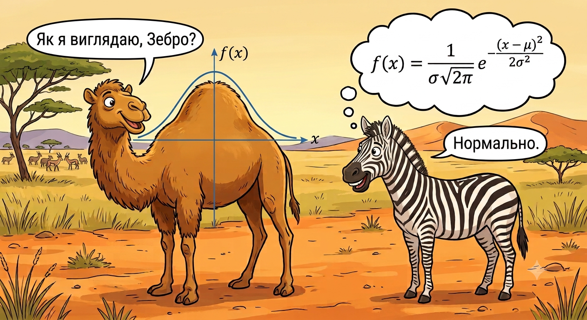

Це інтерактивний довідник з мешканців теорії ймовірностей — все честно, з формулами, але з історіями.
Три вольєри нагорі: 🦔 Дискретні, 🐫 Неперервні, 🦄 Хімери (мішані розподіли — атом плюс неперервна крива в одному звірі). Обери вольєр, а потім — конкретного мешканця з ряду карток під ним.
На кожній картці рухай повзунки — графік ізначення параметрів в спойлері «Досьє натураліста» оновлюються на льоту. Не забудь заглянути в «🔗 Родинні зв’язки» — там мешканці посилаються один на одного, і можна клікнути прямо на ім’я родича, щоб перестрибнути до нього. А де є кнопка «🧬 Походження видів» — обов’язково натисни: там пояснено, як один розподіл перетворюється на інший.
